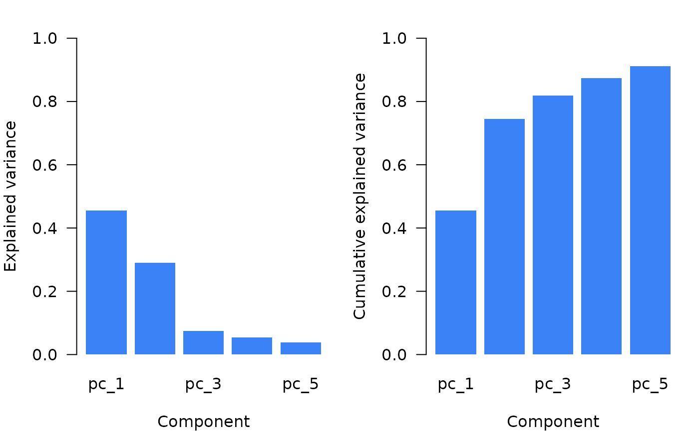

Performs orthogonal projections of high-dimensional data matrices using principal component analysis (PCA) or partial least squares (PLS).
Usage
ortho_projection(
Xr, Xu = NULL, Yr = NULL,
ncomp = ncomp_by_var(0.01),
method = c("pca", "pca_nipals", "pls", "mpls", "simpls"),
center = TRUE,
scale = FALSE,
tol = 1e-6,
max_iter = 1000L,
pc_selection = deprecated(),
...
)
# S3 method for class 'ortho_projection'
predict(object, newdata, ...)
# S3 method for class 'ortho_projection'
plot(x, col = "#3B82F6", ...)
# S3 method for class 'ortho_projection'
predict(object, newdata, ...)Arguments
- Xr
A numeric matrix of reference observations (rows) and variables (columns).
- Xu
An optional matrix of additional observations to project.
- Yr
An optional response matrix. Required for PLS methods (
"pls","mpls","simpls") and when usingncomp_by_opc().- ncomp
Component selection method. Either:
A positive integer (equivalent to
ncomp_fixed(n))An
ncomp_selectionobject:ncomp_by_var(),ncomp_by_cumvar(),ncomp_by_opc(), orncomp_fixed()
Default is
ncomp_by_var(0.01).- method
A character string specifying the projection method:
"pca": PCA via singular value decomposition (default)"pca_nipals": PCA via NIPALS algorithm"pls": PLS via NIPALS algorithm"mpls": Modified PLS via NIPALS (Shenk and Westerhaus, 1991)"simpls": PLS via SIMPLS algorithm (de Jong, 1993)
- center
A logical indicating whether to center the data. Default is
TRUE. PLS methods always center internally regardless of this setting.- scale
A logical indicating whether to scale the data to unit variance. Default is
FALSE.- tol
Convergence tolerance for the NIPALS algorithm. Default is
1e-6. Ignored whenmethod = "simpls".- max_iter
Maximum number of iterations for NIPALS. Default is
1000. Ignored whenmethod = "simpls".- pc_selection
![[Deprecated]](figures/lifecycle-deprecated.svg) Use
Use ncompinstead.- ...
Additional arguments (currently unused).
- object
Object of class
"ortho_projection".- newdata
Matrix of new observations to project.
- x
An object of class
ortho_projection(as returned byortho_projection).- col
Color for the plot elements. Default is
"#3B82F6".
Value
An object of class "ortho_projection" containing:
scores: Matrix of projected scores forXr(andXu).X_loadings: Matrix of X loadings.Y_loadings: Matrix of Y loadings (PLS only).weights: Matrix of PLS weights (PLS only).projection_mat: Projection matrix for new data (PLS only).variance: List with original and explained variance.scores_sd: Standard deviation of scores.ncomp: Number of components retained.center: Centering vector used.scale: Scaling vector used.method: Projection method used.ncomp_method: The value passed to thencompargument.opc_evaluation: opc optimization results (if applicable).
Details
PCA methods
When method = "pca", singular value decomposition factorizes the
data matrix \(X\) as:
\[X = UDV^{T}\]
where \(U\) and \(V\) are orthogonal matrices (left and right singular vectors), and \(D\) is a diagonal matrix of singular values. The score matrix is \(UD\) and the loadings are \(V\).
When method = "pca_nipals", the non-linear iterative partial least
squares (NIPALS) algorithm is used instead.
PLS methods
Three PLS variants are available:
"pls": Standard PLS using the NIPALS algorithm with covariance-based weights."mpls": Modified PLS using the NIPALS algorithm with correlation-based weights, giving equal influence to all predictors regardless of variance (Shenk and Westerhaus, 1991)."simpls": SIMPLS algorithm (de Jong, 1993), which deflates the cross-product matrix rather than X itself. Computationally faster than NIPALS, especially for wide matrices.
Component selection
When ncomp_by_opc() is used, component selection minimizes
RMSD (for continuous Yr) or maximizes kappa (for categorical
Yr) between observations and their nearest neighbors. See
diss_evaluate.
References
de Jong, S. 1993. SIMPLS: An alternative approach to partial least squares regression. Chemometrics and Intelligent Laboratory Systems 18:251-263.
Martens, H. 1991. Multivariate calibration. John Wiley & Sons.
Ramirez-Lopez, L., Behrens, T., Schmidt, K., Stevens, A., Dematte, J.A.M., Scholten, T. 2013a. The spectrum-based learner: A new local approach for modeling soil vis-NIR spectra of complex data sets. Geoderma 195-196:268-279.
Ramirez-Lopez, L., Behrens, T., Schmidt, K., Viscarra Rossel, R., Dematte, J.A.M., Scholten, T. 2013b. Distance and similarity-search metrics for use with soil vis-NIR spectra. Geoderma 199:43-53.
Shenk, J.S., Westerhaus, M.O. 1991. Populations structuring of near infrared spectra and modified partial least squares regression. Crop Science 31:1548-1555.
Examples
# \donttest{
library(prospectr)
data(NIRsoil)
# Preprocess
sg_det <- savitzkyGolay(
detrend(NIRsoil$spc, wav = as.numeric(colnames(NIRsoil$spc))),
m = 1, p = 1, w = 7
)
# Split data
train_x <- sg_det[NIRsoil$train == 1 & !is.na(NIRsoil$CEC), ]
train_y <- NIRsoil$CEC[NIRsoil$train == 1 & !is.na(NIRsoil$CEC)]
test_x <- sg_det[NIRsoil$train == 0 & !is.na(NIRsoil$CEC), ]
# PCA with fixed components
proj <- ortho_projection(train_x, ncomp = 5)
plot(proj)

# PCA with variance-based selection
proj <- ortho_projection(train_x, ncomp = ncomp_by_var(0.01))
# PCA with OPC optimization
proj <- ortho_projection(train_x, Xu = test_x, Yr = train_y,
ncomp = ncomp_by_opc(40))
#' plot(proj)
# PLS projection (NIPALS)
proj <- ortho_projection(train_x, Xu = test_x, Yr = train_y,
method = "pls", ncomp = ncomp_by_opc(40))
# Modified PLS
proj <- ortho_projection(train_x, Yr = train_y,
method = "mpls", ncomp = 10)
# SIMPLS (faster for wide matrices)
proj <- ortho_projection(train_x, Yr = train_y,
method = "simpls", ncomp = 10)
# }